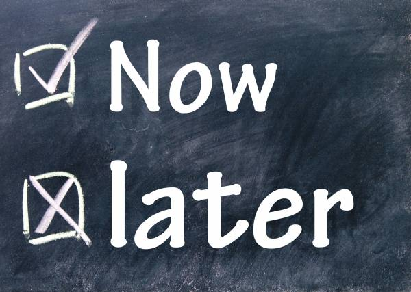
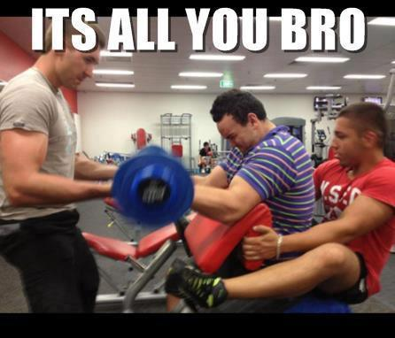
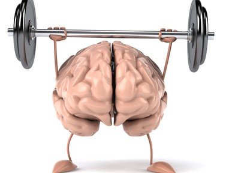

Go back
Beginner guide
Starting your fitness journey with a little bit of education can go a long way toward your future success. Here are 10 tips that every beginner needs to read! Getting off the couch and into the gym can be an intimidating process, especially when everyone seems to know a lot more than you do. To be successful in your fitness goals, it's important to start off on the right track. Far too many beginners get started on the wrong foot, develop bad habits, and then struggle to achieve their goals of building muscle and burning fat. I don't want you to struggle with more challenges than you already have to—many are avoidable! If you can make your first steps positive ones, you'll make excellent progress right away and avoid feeling lost at the start of your fitness journey.
1. Make Fitness a habit
 Going to the gym once is definitely a great start, but you won't see positive changes in your mind and body unless you make hitting the gym a habit. I know it might sound like an impossible task, especially if you feel you have a full day already, but working out 3-4 times each week for at least three weeks is absolutely essential to your budding success. Building lifelong habits takes time, but once you've built those habits into your daily schedule you'll notice that missing them is irritating. "Experts say it takes 21 days to create a habit," says Barbara Bolotte, BPI athlete. "This means it won't be until after 21 days of consistent work at the gym that it'll bother you to miss a workout." When skipping the gym is more of an annoyance than a relief, you know you're on the way to success. Give yourself time to make the habit stick. One week is not enough. Be consistent in your plan and you'll move forward very quickly toward your goals.2. Control your lifts
 Beginners often learn by watching. That's not necessarily a bad thing, but if you copy somebody doing a lift improperly, it means you're not doing it right, either. Most often, bad form comes from trying to lift too much weight too soon. When that happens, most people turn to momentum rather than muscle contraction to move the weight. "Your efforts need to be focused and controlled," says James Grage, co-founder and vice president of BPI Sports. "The key is to isolate muscle groups and strategically work them through various exercises, angles, and techniques." The better you can actually contract each muscle group correctly during a lift, the more your muscles will grow. More weight can wait. In the grand scheme of things, how much you can biceps curl matters very little. What's important is learning how to squeeze your muscles to move the weight rather than using your hips to thrust the weight up.3. Do compound movements
Beginners interested in fitness can be easily distracted by complex training techniques found in magazines and online articles. If you've never stepped foot in a gym or haven't been in one for a long time, going right to isolation moves that work just one muscle group at a time won't bring you the best results. To get the best results for muscle growth and fat loss, it's best to start with compound lifts like the squat, bench press, shoulder press, bent-over row, deadlift, pull-up, and lunge. These lifts require you to use multiple muscle groups at the same time. Doing them will allow you to lift more weight, hit more muscles, and increase your metabolic rate much better than you could doing dropsets of isolation movements like triceps extensions. To start, select lifts that require you to use at least half your body to do them. You can add isolation work as you get going, but start with the moves that will give you the most bang for your buck.4. Eating
Just because you hit the gym doesn't mean you get to spend the day eating pizza and doughnuts. What you do in your workout is just a small piece of the fitness puzzle. What you do with the other 23 hours you're not in the gym is much more important. "A clean diet is key for both your mental and physical well-being," says Bolotte. "Get your diet straight first before worrying about anything else." The word "diet" can be a little scary, but I'm not telling you to have celery and water for every meal. Nutrition doesn't have to be difficult. To start, get rid of all the processed crap in your diet and eat protein and vegetables at every meal. You can still enjoy good food, but make smarter choices. Instead of having pizza one night, try making chicken with quinoa and green beans. You can still make food that tastes good—it just takes a little more thought and preparation. "Even if you're too busy to make it to the gym, eat healthy meals and you'll still see results," adds Bolotte.5. Build mind-muscle conection
 I know this might sound silly, but it's important to actually focus your mind on the muscle you're training. "Learn to really feel your muscles," advises James. "You can practice without even picking up a weight. While you're at home, flex your arm and feel your biceps contracting." Being able to focus your mind on what your muscles are doing is often called the "mind-muscle connection." Consciously telling your muscles to move in a certain way will help you visualize and develop the target muscle group. The mind-muscle connection is the way to maximize a workout, according to James. "You aren't just there to count reps. You're there to really feel the muscle through each and every segment of the movement pattern."6. Learn from your mistakes
Nobody started out as an expert. You're just beginning, so remember that you are going to make mistakes. That's the way it is with all things. The trick is to pay attention to these mistakes and learn from them. Think about your body and how it responds to your lifts, your diet, and even your attitude. No two people are entirely alike. The better you understand yourself, the more you can tailor your workout program to your own needs. This means better results in your future. A great way to keep track of what you do in the gym and the kitchen—and how your body responds—is to keep a journal or blog on BodySpace. Write down your workouts, what you eat, and how you feel. That way, you can look back and figure out what made you feel great, what made you feel sore, and what made you feel like you wanted to quit. Use this information to get better!Go top
Go home
Muscles